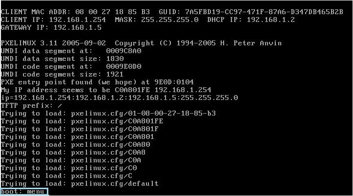
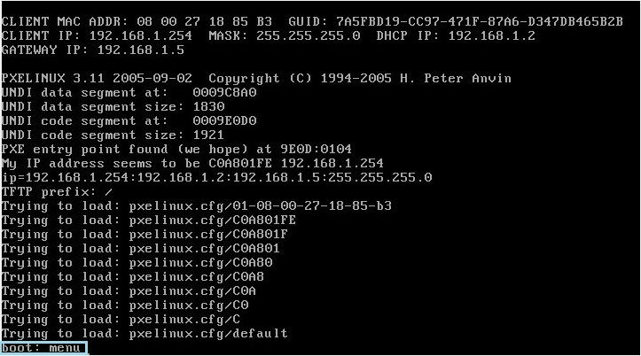

前面一篇介绍了使用Kickstart批量部署redhat，但是这种方法配置起来比较麻烦。现在，我们有了更好的选择。那就是：Cobbler。在看以下内容时最好先看下：Kickstart批量部署redhat。
系统环境：CentOS 5
CentOS5.4默认的Repository里找不到Cobbler，先安装rpmforce这个Repository。很全很强大，近10000个软件包。
1. 安装相关软件：
# cobbler的配置文件在/var/lib/cobbler/和/etc/cobbler下（不同版本可能不同）
# xinetd tftp-server用来做tftp服务器，pxe启动需要。
# httpd服务器主要存放ks文件和安装光盘。注意 /var/www/cobbler 目录必须具有足够容纳 Linux 安装文件的空间（移动，建软链接）
2. 检查 cobbler 配置：
#0: The 'server' field in /var/lib/cobbler/settings must be set to something other than localhost, or kickstarting features will not work. This should be a resolvable hostname or IP for the boot server as reachable by all machines that will use it.
#1: For PXE to be functional, the 'next_server' field in /var/lib/cobbler/settings must be set to something other than 127.0.0.1, and should match the IP of the boot server on the PXE network.
#2: change 'disable' to 'no' in /etc/xinetd.d/tftp
# 按提示解决相关问题，把 /var/lib/cobbler/settings 中的 server 和 next_server 设为本服务器的 IP 地址，/etc/xinetd.d/tftp中disable = yes，manage_dhcp 设为 1，以便管理 DHCP
3. 导入 CentOS 5 安装 DVD ISO 中的文件：
4. 修改 DHCP 和 Kickstart 配置模板：
5. 生成并同步所有配置：
6. 启动相关服务：
7. 安装服务器：
启动另一台新服务器，通过 PXE 启动进入，提示"boot:"时输入"menu"即可进入蓝色的 Cobbler 安装界面，选择安装项，几分钟之内就能一气呵成，自动完成系统安装。

8.重装系统：
9. 其他：
参考文献：http://hutuworm.blogspot.com/2008/08/cobblerlinux.html
系统环境：CentOS 5
CentOS5.4默认的Repository里找不到Cobbler，先安装rpmforce这个Repository。很全很强大，近10000个软件包。
- #32位：
- wget http://packages.sw.be/rpmforge-release/rpmforge-release-0.5.1-1.el5.rf.i386.rpm
- rpm -ivh rpmforge-release-0.5.1-1.el5.rf.i386.rpm
- #64位：
- wget http://packages.sw.be/rpmforge-release/rpmforge-release-0.5.1-1.el5.rf.x86_64.rpm
- rpm -ivh rpmforge-release-0.5.1-1.el5.rf.x86_64.rpm
1. 安装相关软件：
- yum -y install cobbler dhcp httpd xinetd tftp-server
# cobbler的配置文件在/var/lib/cobbler/和/etc/cobbler下（不同版本可能不同）
# xinetd tftp-server用来做tftp服务器，pxe启动需要。
# httpd服务器主要存放ks文件和安装光盘。注意 /var/www/cobbler 目录必须具有足够容纳 Linux 安装文件的空间（移动，建软链接）
2. 检查 cobbler 配置：
- cobbler check
#0: The 'server' field in /var/lib/cobbler/settings must be set to something other than localhost, or kickstarting features will not work. This should be a resolvable hostname or IP for the boot server as reachable by all machines that will use it.
#1: For PXE to be functional, the 'next_server' field in /var/lib/cobbler/settings must be set to something other than 127.0.0.1, and should match the IP of the boot server on the PXE network.
#2: change 'disable' to 'no' in /etc/xinetd.d/tftp
# 按提示解决相关问题，把 /var/lib/cobbler/settings 中的 server 和 next_server 设为本服务器的 IP 地址，/etc/xinetd.d/tftp中disable = yes，manage_dhcp 设为 1，以便管理 DHCP
3. 导入 CentOS 5 安装 DVD ISO 中的文件：
- mount -o loop home/sapling/CentOS-5.4-x86_64-bin-DVD.iso /mnt/redhatISO
- cobbler import --mirror=/mnt/redhatISO --name=CentOS-5-4-x86-64
- # 从 /mnt/redhatISO 目录导入所有安装文件，命名为 CentOS-5-4-x86-64
- cobbler list
- # 查看导入结果，应包含一个xen的
4. 修改 DHCP 和 Kickstart 配置模板：
- vi /etc/cobbler/dhcp.template
- # DHCP 配置模板，注意你本服务器的 IP 地址要和dhcp配置的subnet一个网段，否则会启动失败。
- vi /etc/cobbler/default.ks
- # Kickstart 配置模板，可以用system-config-kickstart（建议）生成，也可以安装系统后在/root/anaconda-ks.cfg得到你所安装系统的配置。
5. 生成并同步所有配置：
- cobbler sync
6. 启动相关服务：
- service xinetd start
- service dhcpd start
- service cobblerd start
- #设置相关服务开机启动
- ntsysv
7. 安装服务器：
启动另一台新服务器，通过 PXE 启动进入，提示"boot:"时输入"menu"即可进入蓝色的 Cobbler 安装界面，选择安装项，几分钟之内就能一气呵成，自动完成系统安装。

8.重装系统：
- # 在要重装的机器安装koan
- yum install koan
- #查看cobbler服务器有哪些安装盘
- koan --list-profiles --server=192.168.1.2
- #选择要重装的系统并重启
- koan --replace-self --server=192.168.1.2 --profile=CentOS-5-4-x86-64
- reboot
9. 其他：
参考文献：http://hutuworm.blogspot.com/2008/08/cobblerlinux.html
分享到：


发表评论
- 浏览: 139259 次
- 性别:

- 来自: 福建

最新评论
-
lz1130：
forcer521 写道这个是什么问题呢，启动了访问报错：引用 ...
viewvc安装配置 -
forcer521：
这个是什么问题呢，启动了访问报错：引用An Exception ...
viewvc安装配置 -
hnlixf：
很强大的一篇文章，看了大有帮助
haproxy_keepalived安装配置 -
wangpeihu：
文章不错，如果加上适当的说明，就更好了。学习中...
mysql常用命令（持续更新） -
zxflb：
目前正在用vi/vim 觉得够用了。。看到这张图才知道 原来 ...
一张图介绍了vim基本使用

评论